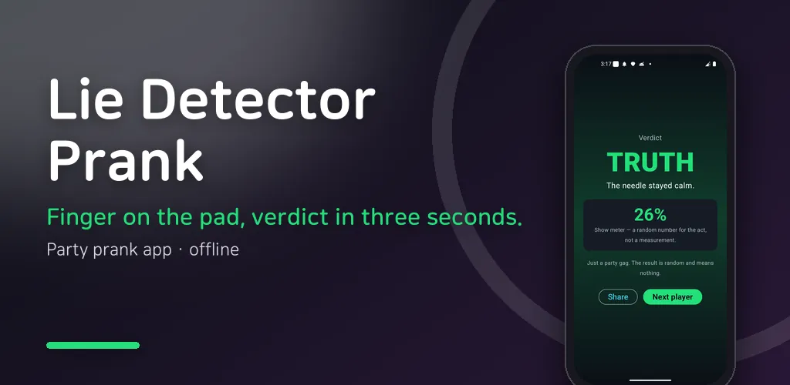
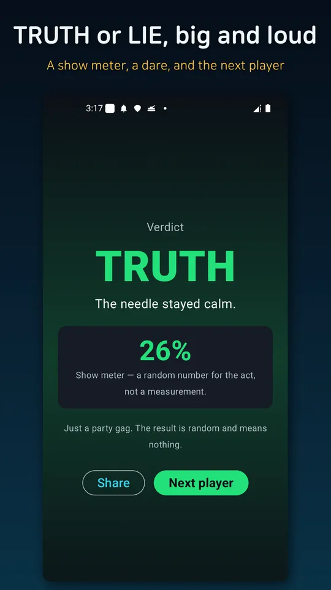
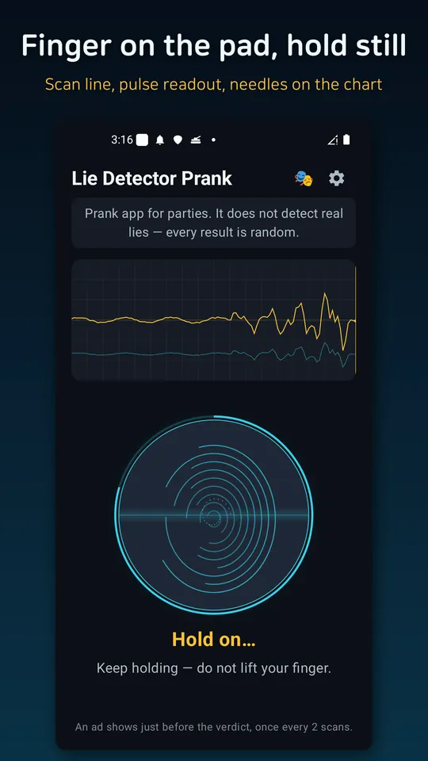
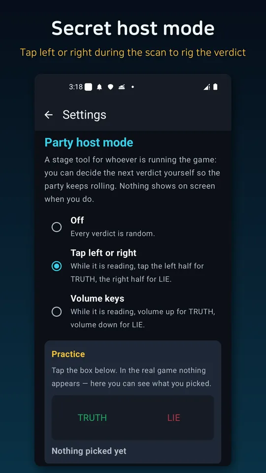
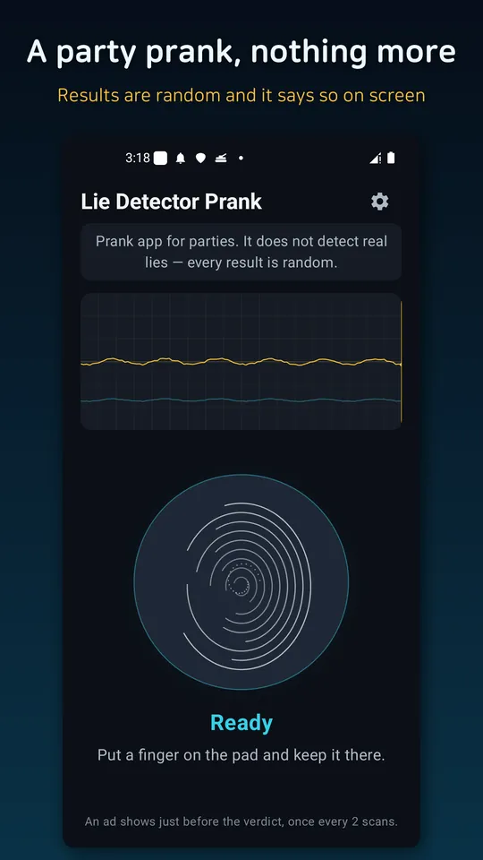

Lie Detector Prank Party Game
Fake lie detector prank for parties: hold a finger, get a verdict, spin a dare.





About this app
Ask your friend a question. Tell them to put a finger on the pad. The scanner sweeps, the heartbeat gets faster, the needle jumps across the paper. Then it pauses for a second — and the verdict lands. Truth, or lie.
This is a party prank toy. It does not detect real lies. Every verdict is a random stage effect, and the app keeps telling you so. That is exactly why it is fun.
- *Ten seconds a turn**
Question, finger scan, verdict. One turn takes about ten seconds, so it goes around a table easily. Built for gatherings, dorm nights, birthdays, road trips and school breaks.
- *Forty dares**
Whoever gets LIE spins the dare roulette. Talk like a robot, ten jumping jacks, compliment everyone in the room — forty light dares that anybody can laugh off. Nothing risky, nothing humiliating, nothing about drinking.
- *Party host mode — the real trick**
Whoever runs the game can decide the verdict. While the scan is running, tap the left half of the screen for TRUTH, the right half for LIE. Volume keys work too. Nothing appears on screen, so nobody around you notices, and you get one short buzz on your fingertip as confirmation. There is a practice box in settings so you can get the timing right before the party.
- *Effects that sell the act**
An accelerating heartbeat, two needle traces running across polygraph paper, one fake hesitation right before the answer, then a buzzer and a screen shake if it says LIE. Every sound was synthesized for this app.
- *Halloween skin**
Flip it on in settings for pumpkin colours. Made for October parties.
- *Share the verdict**
Turn any result into an image and send it straight to your group chat.
- *Notice**
This app is for entertainment only. It does not judge real lies or anyone's state of mind, and every verdict and number shown is randomly generated for the act. It does not read your voice or your body, and everything works offline.
Ads: an interstitial shows just before the verdict, once every two scans, plus a banner at the bottom. There are no in-app purchases.
Android · free with ads · Developer: RealTunaLove · Store listing in 17 languages
Background story: why I built it